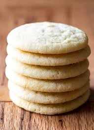

Sugar Cookies
A sweet treat that is easy to make and is delicious!

Servings
1
Ingredients
- 2.75 cups of all-purpose flour
- 1 tsp. baking soda
- 0.5 tsp. baking powder
- 1 cup butter, softened
- 1.5 cups white sugar
- 1 egg
- 1 tsp. vanilla extract
Instructions
- Preheat oven to 375 degrees F
- In a small bowl, stir together flour, baking soda, and baking powder
- In a large bowl, cream together the butter and sugar until smooth
- Beat in egg and vanilla
- Make sure everything is well incorporated
- Roll rounded teaspoonfuls of dough into balls, and place onto ungreased cookie sheets
- Bake 8 to 10 minutes in the preheated oven, or until golden
- Let stand on cookie sheet two minutes before removing to cool on wire racks
- Enjoy!